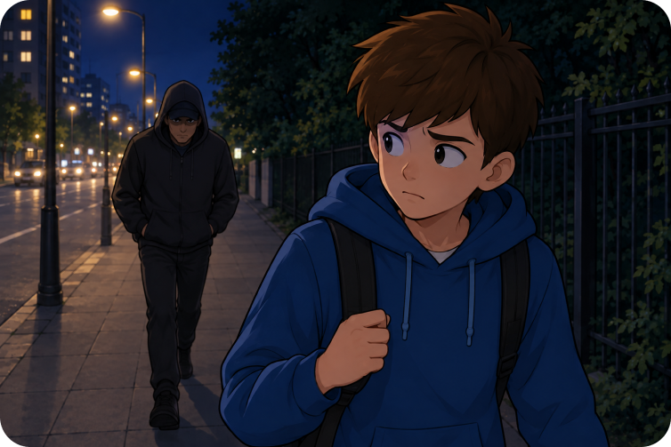

Сюжет второй Ты идешь по улице, и вдруг замечаешь, что за тобой уже пару минут идет подозрительный человек, ускоряя шаг, когда ускоряешься ты. Что предпринять?
Забежать в темный подъезд ближайшего дома, чтобы спрятаться.
Выйти к людному месту (магазин, ТЦ, аптека), зайти внутрь и позвонить родителям/полиции.
Повернуться и начать громко кричать на него, провоцируя на драку.

❌ Опасно! Плохая идея. Замкнутое темное пространство без людей — ловушка. Преследователь может зайти за тобой.